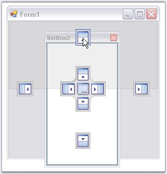
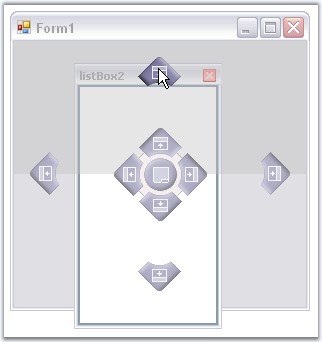
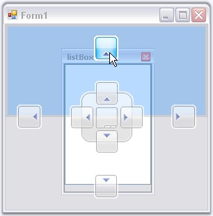
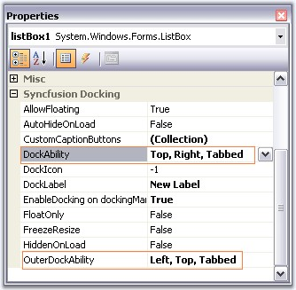
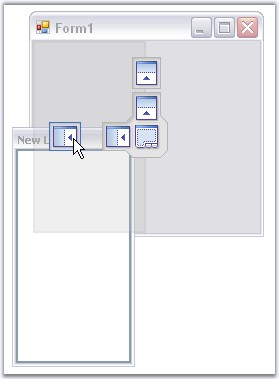
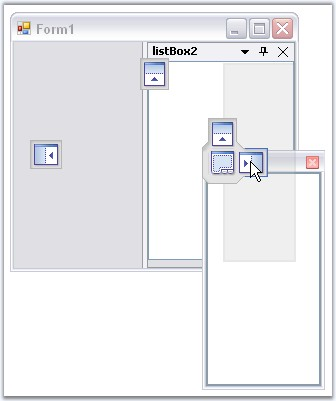

While dragging and dropping a docked control, DockingManager guides you through the process, using DragProviderStyle property.
On setting this property to VS2005 or Whidbey style, you will be able to see arrows on four sides of the form, when a control is dragged. These arrows will guide you where to dock the window. Keeping the mouse point on a particular arrow will display a shadow like appearance based on the side of docking.
There are three docking provider Styles. They are,
· Standard (Default value - no arrows appears for this option),
· VS2005,
· WhidBey and
· VS2008.
|
[C#]
this.dockingManager1.DragProviderStyle = Syncfusion.Windows.Forms.Tools.DragProviderStyle.VS2008; |
|
[VB.NET]
Me.dockingManager1.DragProviderStyle = Syncfusion.Windows.Forms.Tools.DragProviderStyle.VS2008 |

Figure 85: VS 2005 DragProviderStyle

Figure 86: Whidbey DragProviderStyle

Figure 87: VS 2008 DragProviderStyle
In the image above, a shadow for docking a panel to the top of the form is displayed. Target area is highlighted at the top, as the mouse is hovered over the top Dock arrow.
Visibility of the Arrows
The docking arrows visibility, while dropping a control inside the form or into another docked control, can be set using the below properties.
|
DockedControl Property |
Description |
|
DockAbility |
Indicates where the user can dock in this control using drag providers. |
|
OuterDockAbilility |
Indicates where the user can dock the controls in a form using the drag providers. |

Figure 88: Property Grid indicating DockAbility and OuterDockAbility

Figure 89: OuterDockAbility set in the form to Left, Top and Tabbed

Figure 90: DockAbility Set within a control to Right, Top and Tabbed
See Also